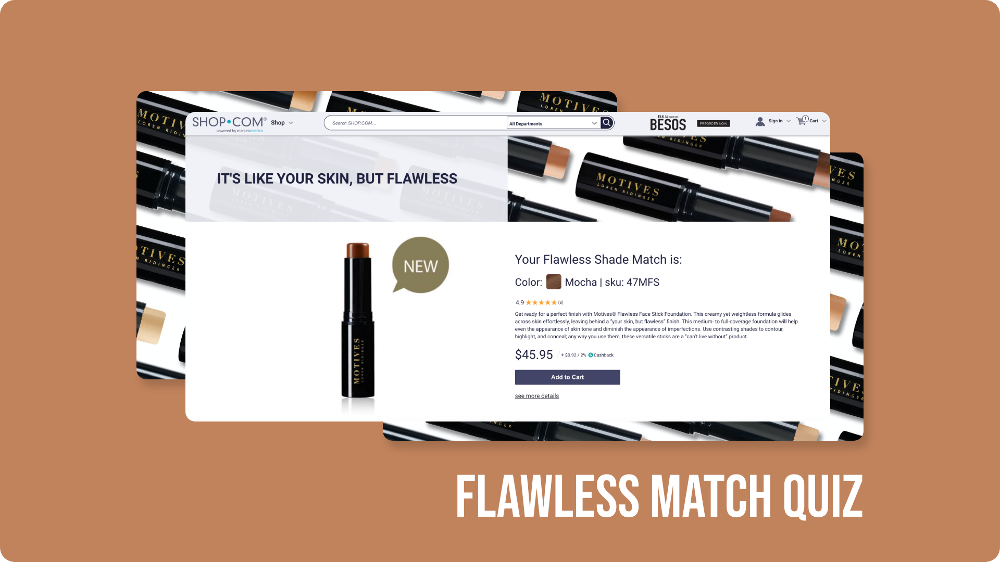
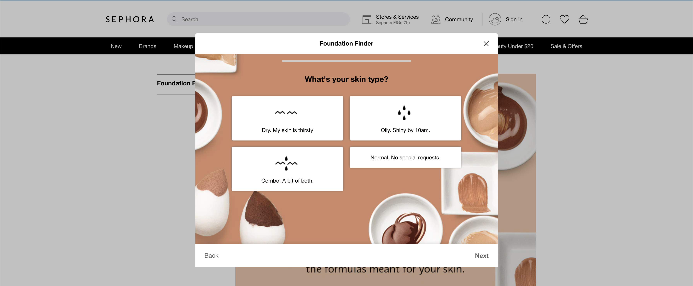
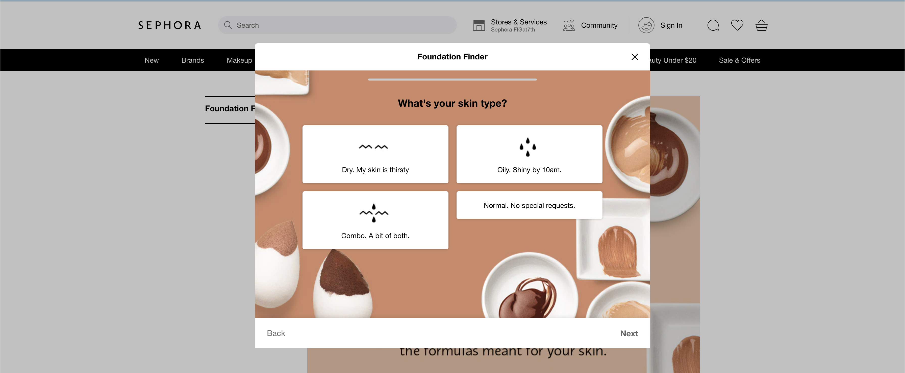

Foundation Match Quiz | Motives Cosmetics
A match quiz with an algorithm to narrow down the perfect foundation shade.
 Link to Live ProjectProblem
With the launch of the new product; Motives Cosmetics Flawless Face Stick Foundation there was not a way to virtually find your color match.
My Role
My roles for this project consisted of UX designer and front end developer. I designed the concepts for each quiz question page, how a user navigates through the quiz, and getting their final result. I also developed the HTML SCSS and JavaScript for the quiz as well.
Goal
The goal was to provide a page of informational interactive content that a user would engage with to learn about the brand. Primarily to then increase sales based on the trust built.
Outcome
The outcome of the foundation quiz was an overall increase in sales for the foundation.
Project Background
The background of this project was presented by business to improve interactivity and sales.
The objective for this market was to bring more attention to a new foundation; the Motives Cosmetics Flawless Foundation Stick and Motives Cosmetics Flawless Foundation Stick Bundles.
The need for this quiz was prompted by the fact of no in person stores to try on the foundation.
Product Research
Competitor research for this project consisted of investigating other beauty brands.
Most beauty websites have a version of a quiz in order to make it more interactive.
My research was emphasized in color matching, higher end beauty brands, and any form of quizzes.
 

Synthesis
Sythesis for this project originated from the point of business.
SHOP.COM sells products for affiliate Unfranchise Owners (UFOs), these owners wanted a better way to sell their products to their customers and provide more information about the product.
The primary market for UFOs are beauty in skincare and are located in Taiwan.
Because there is no in person option for trying on the foundations - the requested solution from the UFO business owners was a quiz to meet their needs to better sell to their customers.
Solution Proposal
The solution proposal
Design Solution
Testing
The testing for this project consisted of wireframe walkthroughs initially with other team members and my direct boss.
By presenting the initial prototype to my front end team and doing a walkthrough I gathered feedback on what to include and what to remove.
- Keep each next button disabled until an answer is selected.
- Add the ability to go back and change your answer for a previous question.
Iteration
The iterations for this project began initially with sketches. I drew out what each type of question could look like.
Then I created a basic wireframe to show the flow.
Then I created a low fidelity prototype.
Final Deliverable
The final design deliverable was presented with Adobe XD
Design Decisions
The major design decisions made for this project overall were:
- Progress Bar indication to provide clarity for the length of the quiz, accessibility, and organization.
- Variations in UI for questions. Knowing that these would all be radio buttons and need to be styled in different ways shown: image or box.
- Keeping the entire quiz itself as a page by page format knowing that each reponse would need to be saved in the answer matrix and saved in a form to be submitted at the end of the quiz.
- Including the additional information regarding your undertone in an overlay rather than directly on the question page.
- Adding a visual indicator of focus for when an answer is selected.
- Including the same banner from the landing page in the results page to provide continuity within the quiz.
- Adding in the basic product information and pricing so the user would add to cart right at the end of the quiz and not navigate away to the product page.